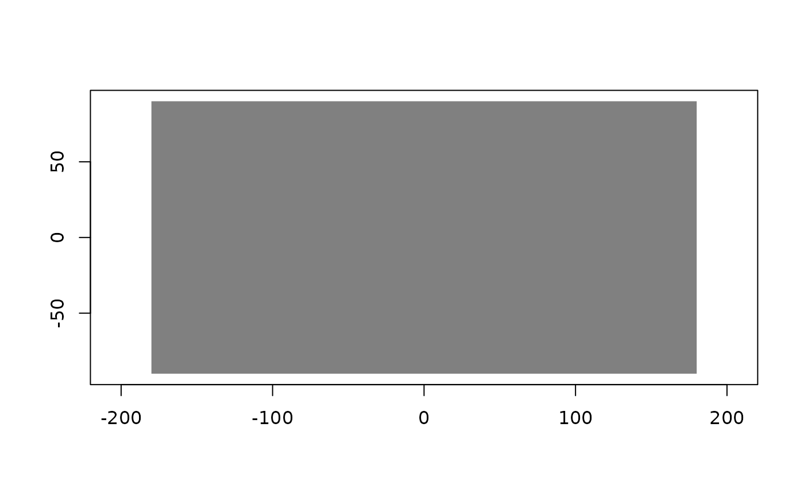
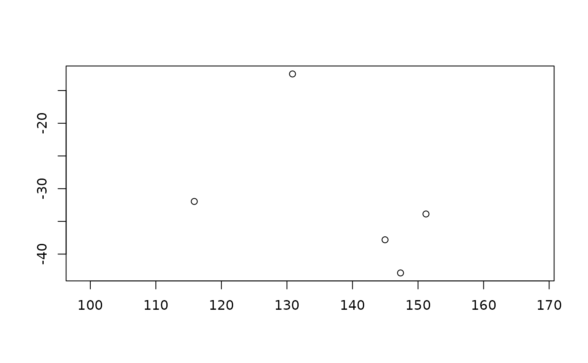

plot() is the third terminal verb, and it is lazy in the way its kind of
data allows.
Arguments
- x
- y
Unused, and present only because
plot()'s own signature has it.- ...
Passed to the underlying plotting method, plus
asfor a raster:"grd"(the default) draws throughwk::grd_rct(), and"gis"reads at about the device's resolution and draws throughximage::ximage(), which handles the three- and four-band cases as RGB.
Details
For a raster that means resolution laziness: the plan becomes a lazy grid
(as_grd()) and wk's own grid plotting reads the device, works out a
step, and asks for about as many pixels as the device has, which GDAL
serves from whichever overview fits. Drawing a 30000 by 30000 source costs
the bytes of an 800 by 600 read, not of the file.
For a vector it means extent laziness only, and the difference is worth
being plain about. There is no geometry overview and building one would be
exactly the automatic virtualisation this package refuses, so a wide view
of a big layer reads a lot of features. When the layer says how many that
is and the number is large, plot() says so before it starts.
Examples
x <- src(system.file("extdata/test.tif", package = "GDAL7"))
plot(query(x, bands = 1))

v <- src(system.file("extdata/test.gpkg", package = "GDAL7"))
plot(v)
